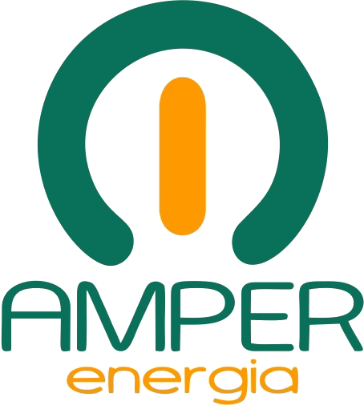

Aprenda, de forma simples e ilustrada, a usar um assistente de IA que lê, escreve e organiza arquivos para você — mesmo sem ser programador.
Edição 2026 · Com exemplos para Engenharia Elétrica e Energia SolarAmper Energia · amperenergia.com.br
Conteúdo
Sumário
01O que é o Claude Code?3
02Como ele funciona por dentro4
03Onde usar: terminal, desktop, web e editor5
04Instalação passo a passo6
05Sua primeira conversa7
06Comandos e atalhos essenciais8
07Permissões: quem manda é você9
08CLAUDE.md: a memória do projeto10
09Como fazer bons pedidos11
10Superpoderes: MCP, Skills, Subagentes e Hooks12
11Exemplos práticos para Engenharia Elétrica13
12Boas práticas e segurança14
13Glossário e próximos passos15
—Sobre a Amper Energia16
Para quem é este e-book?
Para quem nunca usou o Claude Code ou usa pouco. Não é preciso saber programar: se você sabe descrever uma tarefa em português, já consegue começar. Os exemplos do capítulo 11 usam situações do dia a dia de quem trabalha com projetos elétricos e usinas fotovoltaicas.

Claude Code Descomplicado · Amper Energia2
Capítulo 01
O que é o Claude Code?
O Claude Code é um assistente de inteligência artificial que trabalha dentro do seu computador (ou na nuvem), com acesso às pastas e arquivos que você permitir.
Em um chat comum, você pergunta e a IA responde com texto — e você precisa copiar, colar e fazer o trabalho. No Claude Code, a IA executa: ela abre arquivos, cria planilhas, escreve códigos, roda comandos, corrige erros e mostra o resultado.
Figura 1 — A diferença entre um chat comum e o Claude Code.
O que ele consegue fazer
Ler e entender pastas inteiras de arquivos
Criar e editar documentos, planilhas e PDFs
Escrever programas e scripts de cálculo
Criar sites e páginas (como uma landing page)
Encontrar e corrigir erros
Usar o Git e o GitHub para salvar versões
Em uma frasePense no Claude Code como um estagiário muito rápido e estudioso: você explica o que quer, ele faz, e você confere antes de aprovar.
Claude Code Descomplicado · Amper Energia3
Capítulo 02
Como ele funciona por dentro
O Claude Code trabalha em um ciclo: entende o pedido, investiga, age e confere. Ele repete esse ciclo até a tarefa ficar pronta.
Figura 2 — O ciclo de trabalho do Claude Code (o "loop do agente").
As "ferramentas" que ele usa
Para cada etapa, o Claude escolhe uma ferramenta, como um eletricista escolhe entre alicate, multímetro e chave de fenda:
Ferramenta
Para que serve
Analogia
Ler
Abrir e ler o conteúdo de um arquivo
Ler a planta do projeto
Buscar
Encontrar arquivos ou palavras em uma pasta
Procurar um circuito no quadro
Editar / Escrever
Alterar ou criar arquivos
Fazer a revisão do projeto
Terminal (Bash)
Rodar comandos e programas
Ligar o disjuntor e testar
Web
Pesquisar e ler páginas na internet
Consultar a norma ou o catálogo
Você vê tudoCada ação aparece na tela. Você acompanha o que está sendo feito e pode interromper a qualquer momento com a tecla Esc.
Claude Code Descomplicado · Amper Energia4
Capítulo 03
Onde usar o Claude Code
O mesmo assistente está disponível em vários lugares. Escolha o que for mais confortável para você.
Figura 3 — Os quatro "lugares" onde o Claude Code funciona.
Opção
Ideal para
Nível
App Desktop
Quem prefere janelas e botões; trabalha com pastas do seu computador
Iniciante
Web / celular
Trabalhar de qualquer lugar; as tarefas rodam na nuvem, ligadas ao GitHub
Iniciante
Terminal
Mais controle e velocidade; tela de texto
Intermediário
Editor (IDE)
Quem já programa e quer ver as alterações lado a lado
Intermediário
Sugestão para começarSe você nunca usou terminal, comece pelo App Desktop ou pela versão web. Os conceitos deste e-book valem para todas as versões.
AssinaturaO Claude Code exige uma conta paga do Claude (planos Pro, Max, Team ou Enterprise) ou uma conta da API da Anthropic. Confira os planos atuais em claude.ai.
Claude Code Descomplicado · Amper Energia5
Capítulo 04
Instalação passo a passo
Vamos instalar a versão de terminal. São poucos passos — e só precisa fazer uma vez.
Figura 4 — Os quatro passos da instalação.
Passo 1 — Abra o terminal
Windows: menu Iniciar → digite PowerShell → Enter.
Mac:Cmd + Espaço → digite Terminal → Enter.
Linux:Ctrl + Alt + T.
Passo 2 — Instale o Claude Code
Copie e cole o comando do seu sistema (instalador oficial):
# Mac e Linux$ curl -fsSL https://claude.ai/install.sh | bash
# Windows (PowerShell)PS> irm https://claude.ai/install.ps1 | iex
Passo 3 — Entre na pasta do seu projeto
$ cd Documentos/Projetos/Usina-Fazenda-Boa-Vista
Passo 4 — Inicie e faça login
$ claude
✓ Abra o link no navegador para entrar com sua conta Claude.
DicaAbra o Claude Code sempre dentro da pasta do projeto — assim ele enxerga só os arquivos daquele trabalho. Se algum comando não funcionar, consulte o guia oficial em code.claude.com/docs.
Claude Code Descomplicado · Amper Energia6
Capítulo 05
Sua primeira conversa
Com o Claude Code aberto, é só escrever o que você quer, em português, e apertar Enter.
Figura 5 — Exemplo de primeira conversa (ilustrativo).
Bons primeiros pedidos para testar
"O que tem nesta pasta? Explique de forma simples."
"Crie um arquivo de texto chamado lista.txt com os itens de um kit fotovoltaico."
"Leia a planilha orcamento.xlsx e me diga o valor total."
"Transforme este texto em um PDF bem formatado."
Ele vai pedir licençaAntes de criar, alterar arquivos ou rodar comandos, o Claude Code mostra o que pretende fazer e pergunta se pode. Leia e aprove (ou recuse). Veja mais no capítulo 7.
Claude Code Descomplicado · Amper Energia7
Capítulo 06
Comandos e atalhos essenciais
Comandos que começam com barra / são "atalhos" para funções especiais. Digite / para ver a lista completa.
Comando
O que faz
/help
Mostra a ajuda e a lista de comandos
/init
Analisa o projeto e cria o arquivo de memória CLAUDE.md
/clear
Limpa a conversa para começar uma tarefa nova
/compact
Resume a conversa para liberar espaço de memória
/model
Troca o modelo de IA usado
/permissions
Mostra e ajusta o que ele pode fazer sem perguntar
/resume
Retoma uma conversa anterior
/mcp
Gerencia as conexões com outros serviços
Atalhos de teclado
Figura 6 — Os atalhos que você mais vai usar.
Use o @ para ser precisoEm vez de "leia a planilha", escreva leia @orcamento_rev2.xlsx. O Claude vai direto ao arquivo certo.
/clear entre tarefas diferentesTerminou um assunto? Use /clear. Conversas curtas e focadas dão respostas melhores.
Claude Code Descomplicado · Amper Energia8
Capítulo 07
Permissões: quem manda é você
O Claude Code funciona como um quadro de comando: você escolhe quanto de autonomia ele tem. Aperte Shift + Tab para trocar de modo.
Figura 7 — Os modos de permissão, como chaves de um quadro.
Quando usar cada modo
Modo
Use quando…
Plano
A tarefa é grande ou você quer ver a estratégia antes. Ele apresenta um plano e só executa após sua aprovação.
Normal
Você está aprendendo ou mexendo em arquivos importantes. É o mais seguro.
Aceitar edições
Você já confia na tarefa e quer agilidade (ex.: ajustar textos de vários arquivos).
Regra de ouroLeia o que ele pede para fazer antes de aprovar — principalmente comandos que apagam arquivos ou enviam algo para a internet. Na dúvida, responda "não" e pergunte o motivo.
Claude Code Descomplicado · Amper Energia9
Capítulo 08
CLAUDE.md: a memória do projeto
Toda conversa nova começa "do zero". O arquivo CLAUDE.md é um bilhete permanente que o Claude lê sempre que começa a trabalhar naquela pasta.
Figura 8 — O CLAUDE.md é lido automaticamente a cada nova conversa.
Como criar
Digite /init e o Claude analisa a pasta e escreve um primeiro rascunho. Depois, você pode editar à vontade — é um arquivo de texto simples.
Exemplo de CLAUDE.md
# Projeto: Usina FV 75 kWp — Fazenda Boa Vista## Regras
- Escreva sempre em português do Brasil.
- Siga a NBR 16690 e a NBR 5410 nos textos técnicos.
- Use unidades do SI (kWp, kWh, V, A, mm²).
- Nunca altere arquivos da pasta /aprovados.
## Informações
- Concessionária: (nome da distribuidora)
- Módulo padrão: 550 Wp · Inversor: 75 kW trifásico 380 V
DicaSempre que você corrigir o Claude duas vezes pela mesma coisa, coloque essa regra no CLAUDE.md. Assim ele não erra de novo.
Claude Code Descomplicado · Amper Energia10
Capítulo 09
Como fazer bons pedidos
A qualidade da resposta depende da clareza do pedido. Peça como você passaria uma tarefa para um colega novo na equipe.
Figura 9 — A receita de um bom pedido: objetivo, contexto, regras e resultado.
✗ Pedido vago
"Faz um relatório da usina."
Qual usina? Que tipo de relatório? Para quem? Em qual formato?
✓ Pedido claro
"Leia @geracao_set.csv e crie um relatório em PDF de 2 páginas para o cliente, comparando a geração real com a estimada mês a mês. Use linguagem simples e inclua um gráfico de barras."
Mais dicas que funcionam
Divida tarefas grandes em etapas. Primeiro peça o plano; depois, cada parte.
Mostre um exemplo. "Use o mesmo formato do @relatorio_modelo.pdf."
Peça para ele conferir. "Depois de calcular, refaça a conta por outro caminho."
Peça perguntas. "Antes de começar, me pergunte o que estiver faltando."
Corrija sem medo. "Não ficou bom: a seção 3 está longa demais, resuma em 5 linhas."
A responsabilidade técnica é suaA IA pode errar. Em cálculos, laudos e documentos com ART, sempre revise os números e as referências normativas antes de assinar.
Claude Code Descomplicado · Amper Energia11
Capítulo 10
Superpoderes
Depois do básico, quatro recursos deixam o Claude Code ainda mais útil. Não precisa usar todos — conheça e use quando fizer sentido.
Figura 10 — Os quatro superpoderes do Claude Code.
Recurso
O que é
Exemplo prático
MCP
Conectores que ligam o Claude a outros serviços e programas
Ler propostas no Google Drive e criar um rascunho de e-mail no Gmail
Skills
Pacotes de instruções para uma tarefa específica, sempre do mesmo jeito
Skill "relatório termográfico" que já segue seu modelo padrão
Subagentes
Outras instâncias do Claude que trabalham em paralelo e devolvem o resultado
Um revisa o memorial enquanto outro confere a planilha
Hooks
Ações automáticas disparadas por eventos
Sempre que um arquivo for salvo, conferir a formatação
Comece pelas SkillsSe você faz o mesmo tipo de documento toda semana (propostas, laudos de SPDA, relatórios), uma Skill economiza muito tempo e mantém o padrão da empresa.
Claude Code Descomplicado · Amper Energia12
Capítulo 11
Exemplos práticos para Engenharia Elétrica
Veja pedidos reais que você pode adaptar ao seu dia a dia. Copie, troque os nomes dos arquivos e use.
Figura 11 — Dos dados de campo ao documento pronto.
Situação
Pedido para o Claude Code
Dimensionamento FV
"Com base no consumo médio de @faturas_12meses.pdf e irradiação de 5,2 kWh/m²/dia, calcule a potência da usina, a quantidade de módulos de 550 Wp e sugira o inversor. Mostre as contas passo a passo em uma planilha."
Monitoramento
"Compare @geracao_real.csv com a geração estimada do projeto. Aponte os meses abaixo de 90% e possíveis causas (sujeira, sombreamento, falha de string)."
Termografia
"Organize as fotos da pasta /termografia em um relatório: para cada ponto, mostre a temperatura, o ΔT, a classificação de severidade e a recomendação."
SPDA
"Monte a tabela de medições de resistência de aterramento de @medicoes_spda.xlsx e destaque os pontos acima do limite definido no projeto."
Crédito de ICMS
"Extraia de cada fatura em /faturas o consumo e o ICMS por mês e monte a planilha-resumo para o laudo, com totais por setor."
Site da empresa
"Crie uma landing page simples para a empresa, com seções de serviços, depoimentos e botão de WhatsApp."
LembreteOs valores e critérios acima são exemplos. Use sempre os dados reais do projeto, as normas vigentes e as exigências da sua concessionária.
Claude Code Descomplicado · Amper Energia13
Capítulo 12
Boas práticas e segurança
Algumas regras simples evitam 99% dos problemas.
Figura 12 — Checklist de segurança.
✓ Faça
Uma tarefa por conversa; use /clear ao mudar de assunto.
Use o modo Plano em tarefas grandes.
Mantenha o CLAUDE.md atualizado.
Peça para ele testar e conferir o próprio trabalho.
Trabalhe em uma cópia dos arquivos originais.
✗ Evite
Abrir o Claude Code na pasta raiz do computador.
Aprovar comandos que você não entendeu.
Pedidos enormes em uma única mensagem.
Conversas muito longas sem /compact.
Entregar documentos técnicos sem revisão.
Git: o "botão desfazer" do projeto
O Git guarda fotos (versões) dos seus arquivos. Se algo der errado, dá para voltar. Basta pedir em português:
> salve uma versão com a mensagem "memorial revisão 2"
> o que mudou desde a última versão?
> desfaça as alterações no arquivo memorial.docx
Claude Code Descomplicado · Amper Energia14
Capítulo 13
Glossário e próximos passos
Termo
Significado simples
Agente
IA que não só responde, mas executa ações para cumprir uma tarefa.
Terminal / CLI
Tela de texto onde se digitam comandos para o computador.
Prompt
O pedido ou instrução que você escreve para a IA.
Contexto
Tudo o que a IA "tem em mente" na conversa atual (mensagens e arquivos lidos).
CLAUDE.md
Arquivo de memória com regras e informações do projeto.
MCP
Padrão para conectar a IA a outros programas e serviços.
Skill
Pacote de instruções para uma tarefa recorrente.
Git / GitHub
Sistema que guarda versões dos arquivos / site que hospeda esses projetos.
Repositório
Pasta de projeto controlada pelo Git.
Seu plano de 7 dias
Figura 13 — Uma trilha simples para ganhar confiança em uma semana.
Onde aprender mais
Documentação oficial: code.claude.com/docs
Dentro do Claude Code: digite /help ou simplesmente pergunte "como eu faço…?" — ele sabe explicar a si mesmo.
Agora é com você: abra uma pasta, digite claude e faça o primeiro pedido!
Claude Code Descomplicado · Amper Energia15
Sobre a Amper Energia
Engenharia Elétrica · Energia Solar · Laudos e Estudos Técnicos
Projeto e instalação de usinas fotovoltaicas, projetos elétricos comerciais e industriais, inspeção termográfica, laudos de SPDA e laudos para crédito de ICMS na fatura de energia.
Amper Energia Ltda
CNPJ 24.848.894/0001-32
Rua Tiradentes, 18 – Sala 201 – São José/SC – CEP 88102-040
WhatsApp (48) 98802-4167 · amilcare@amperenergia.com.br
amperenergia.com.br · Instagram @amperenergia
Responsável técnico: Eng. Amilcare Augusto – CREA-SC 17.115-9